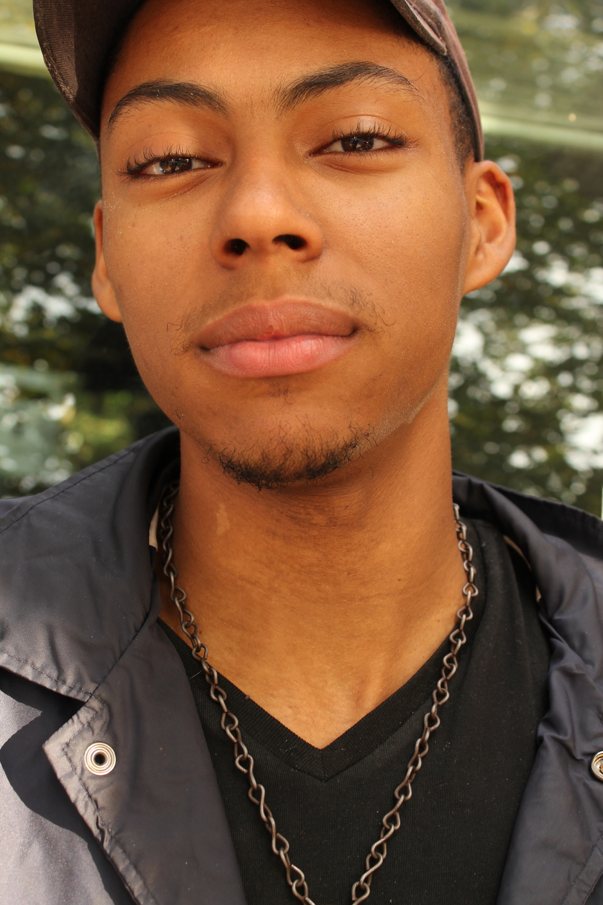
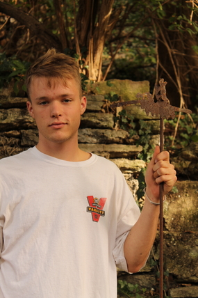

Avery
@nicola_heshla
Avery has been around music since birth. He grew up performing and participating in his mother's church band. As he aged, he began to take piano lessons and became a piano teacher. Within high school his compositions became very abstract. He began to combine piano melodies with eccentric rhythm from his experience in drumline. At the age of 22 he moved to Cincinnati to expand his musical pursuits. He work on all of the band's recordings and assists with organizing shows and events for his latest band, Hyde and the Escapees.
Jacob
@jacob.templar
Jacob started playing drums when he was 10 in his grandfather's image. He would constantly tap during class and try to mimic his favorite songs. He met Avery in elementary school and they both joined concert band in the percussion section. Their passion for music slowly began to expand throughout the years. Entering high school, Jacob and Avery played snare drum. As time went on, they both decided to live together and start a new musical venture.Jacob has kept a solid backbeat for band Hyde and the Escapees ever since.
Connor
@connorbussick
Connor began to pursue guitar in the beginning of senior year at his high school. While attending college, Connor met Avery at Roh's Street Cafe in Cincinnati. After becoming close friends, they came together with Jacob to form the full trio, Hyde and the Escapees.